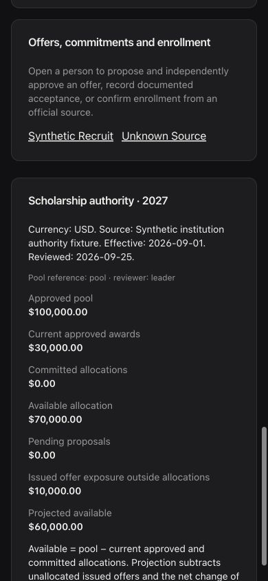

← All projects
Recruiting operations / local candidate
SelfScout College
Player profiles and evaluations connect to staff boards, depth charts, and scholarship planning.
- Profiles
- Manual player details and coach notes
- Evaluations
- 1–5 category stars; unrated state shown clearly
- Planning
- Boards, depth charts, scholarships
Current source
Keep recruiting decisions connected
The local candidate keeps manually entered profile details and category stars alongside staff notes and video references.
Coaches can organize prospects by board tier, work through depth-chart needs, and review scholarship planning in the same workspace.
The images below use a synthetic local fixture. They show application components and styling, not live player records or verified hosted behavior.
Image gallery
Recruiting and scholarship views
Open either image to inspect the complete screenshot. Both use demonstration records.


Workflow
From evaluation to roster discussion
- ProfileEnter player details, context, coach notes, and video references.
- EvaluateRecord 1–5 category stars while keeping an unrated player visibly unrated.
- OrganizePlace prospects on staff boards and review depth-chart needs.
- PlanReview scholarship pool, offers, and allocations with the appropriate source and approval context.